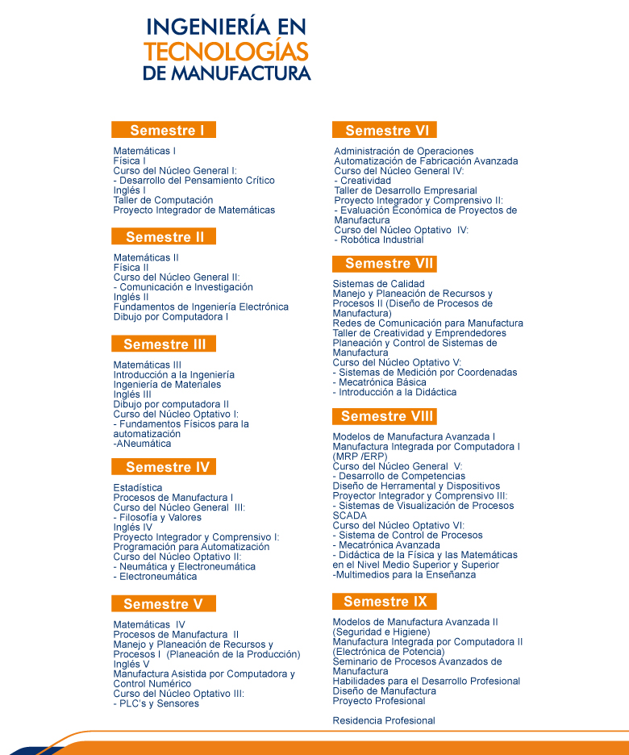

Ingeniería en Tecnologías de Manufactura (ITMA)
Nivel: Licenciatura
Título otorgado: Ingeniería en Tecnologías de Manufactura
Duración: 9 Semestres
Descripción carrera:
La carrera de Ingeniería en Tecnologías de Manufactura (ITMA), ha sido diseñada para cubrir diferentes funciones dentro del sector industrial, teniendo como sus tres pilares modulares, la automatización y control de procesos, el diseño avanzado y la administración de procesos. El conocimiento es transmitido a los estudiantes mediante el enfoque de competencias, permitiendo así, mejorar sus habilidades y destrezas tanto sociales como cognitivas para enfrentar los desafíos en diferentes ámbitos laborales. Al inicio de su carrera, se tienen las asignaturas básicas que sustentan estos tres pilares mencionados, donde se establecen las leyes físicas, el razonamiento matemático y lógico, así como, la socialización del estudiante con su entorno.
Perfil de Ingreso
El aspirante, al ingresar al Programa Educativo de Ingeniería en Tecnologías de Manufactura deberá contar, preferentemente, con lo siguiente:
- Gusto por los procesos de producción, automatización y diseño de procesos de manufactura del sector industrial.
- Interés para desarrollarse profesionalmente en empresas manufactureras de la industria automotriz, metalmecánica, alimenticia, aeronáutica, de fundición, industrialización del hule, químicas, así como centros de investigación y desarrollo tecnológico.
- Bases sólidas en el área de las Ciencias de Física y Matemáticas.
- Habilidad para aprender idiomas.
- Espíritu emprendedor y creativo.
- Facilidad para el trabajo colaborativo.
- Habilidades de comunicación verbal y escrita.
- Buenos hábitos de estudio, disciplina, constancia, responsabilidad y autogestión.
Plan de estudios
Consulta Plan de Estudios
-

Certificaciones:
Las certificaciones que ofrece la carrera son:
- Certificación en NEUMATICA
- Certificación en ELECTRONEUMATICA
- Certificación en HIDRAULICA
- Certificación en ELECTROHIDRAULICA
- Certificación en CONTROLES LÓGICOS PROGRAMABLES (PLC)
- Certificación en SENSORES
- Certificación en ROBOTICA INDUSTRIAL
- Certificación en BUS DE CAMPO ABIERTO Y HOMOLOGADO (REDES DE COMUNICACIÓN INDUSTRIALES)
- Certificación en SISTEMAS FLEXIBLES DE MANUFACTURA
- Certificación Lab View (CLAD)
También se tienen los siguientes cursos de los cuales aunque no se certifican, si juegan un papel importante en el desarrollo de las competencias para un Ingeniero en Tecnologías de Manufactura:
- P.I.C I (PROGRAMACIÓN PARA LA AUTOMATIZACIÓN)
- PROCESOS DE MANUFACTURA I (MAQUINADOS, PAILERÍA Y SOLDADURA)
- PROCESOS DE MANUFACTURA II (PLÁSTICOS)
- CAD/CAM Y MANUFACTURA ASISTIDA POR CONTROL NUMÉRICO COMPUTARIZADO
- C.N.O.V SISTEMAS DE MEDICIÓN POR COORDENADAS
- MANUFACTURA INTEGRADA POR COMPUTADORA I (MRP/ERP)
- P.I.C III (SISTEMAS DE VISUALIZACIÓN DE PROCESOS SCADA)
- C.N.O.VI (SISTEMAS DE CONTROL DE PROCESOS)
- MANUFACTURA INTEGRADA POR COMPUTADORA II (PROCESOS DE MANUFACTURA INTELIGENTE)
- SENSORES INDUSTRIALES
Logros / Distinciones:
- 2° lugar en concurso de robótica organizado por la IEEE en Brasil de 2008
- Primer lugar de Labview Robotics Challenge 2012
- Primer lugar del 4° Torneo Internacional de Robótica “Vex Robotics”, Saltillo 2013 (Categoría Diseño)
- Primer Lugar del 3er Torneo Regional de Robótica Vex-Reeduca, San Luis Potosí 2013 (Categoría Excelencia y Campeón del Torneo)
- Primer Lugar del 2° Torneo Regional de la Academia de Robótica Vex-Reeduca, Aguascalientes 2014 (Categoría Diseño)
- 7° lugar del ranking mundial del Campeonato Mundial Vex Robotics en Anaheim, Cal. 2014
Docentes:
DR. MARGARITO MARTÍNEZ CRUZ
DRA. MÓNICA MARCELA ZALDÍVAR MUÑOZ
Perfil de egreso:
Ligas de interés:
- www.solidworkstutorials.com
- www.vexrobotics.com
- www.zeissmetrology.com
- www.advancedmanufacturing.com
- www.ansi.org
- www.festo.com/didactic
Contacto
Ingeniería en Tecnologías de Manufactura (ITMA)
Lic. Graciela Nava Palacios
Asistente de Ingeniería en Tecnologías de Manufactura
Teléfono: (444) 870 – 21 – 00 Ext. 253
Dr. Margarito Martínez Cruz
Coordinador de Ingeniería en Tecnologías de Manufactura
itma@upslp.edu.mx